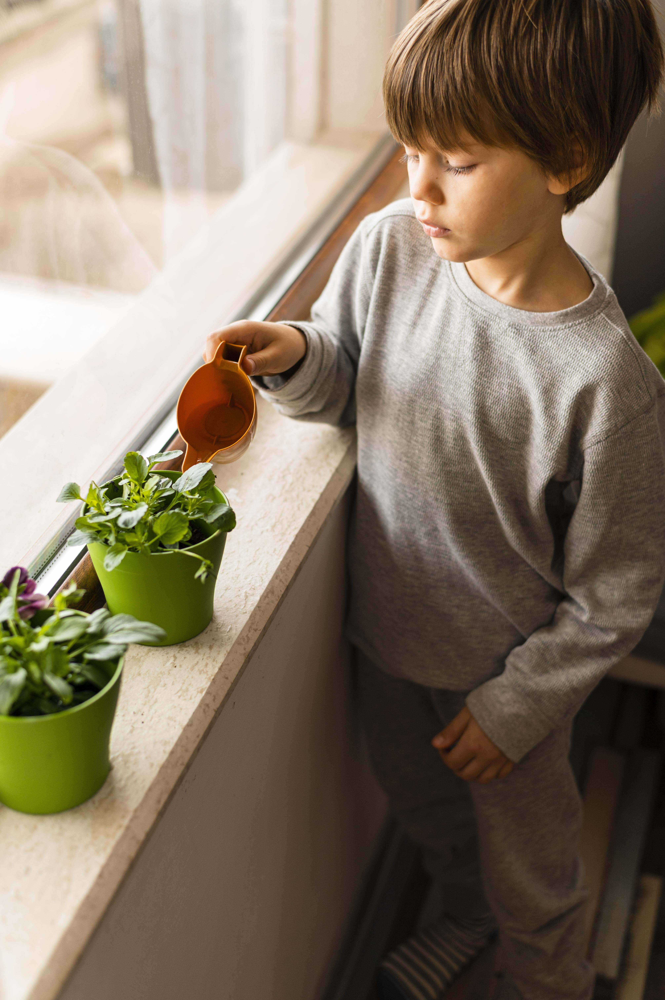

Run a weekly energy check
Let children help notice lights, standby screens, chargers, and appliances that are being used when they do not need to be.
Learn
Sustainable living means making everyday choices that reduce waste, save resources, and support a healthier future. For families, it works best when the habits are simple enough to repeat every day.

Sustainability at home does not need to feel like a separate project. It can live inside ordinary routines: switching off, reusing, repairing, sharing, and noticing waste before it becomes normal.
Daily Practice
The most effective habits are the ones that fit naturally into home life. Switching off lights when leaving a room, using natural light during the day, washing full loads, and keeping doors closed while heating or cooling is on can become normal family routines.
Children are more likely to remember sustainable habits when they see adults doing them consistently. The goal is not perfection; it is building awareness through repeated action.
Use What You Have
Sustainable living is not only about buying new eco-friendly products. It also means using what the family already has more carefully. Repairing, reusing, sharing, and avoiding unnecessary purchases can reduce waste and save money.
The most sustainable choice is often the one that avoids waste in the first place.
Family Learning
Let children help notice lights, standby screens, chargers, and appliances that are being used when they do not need to be.
A small note near chargers, switches, or laundry spaces can turn a family goal into something children see every day.
A family challenge to reduce screen standby time or use natural light can help children connect actions with outcomes.